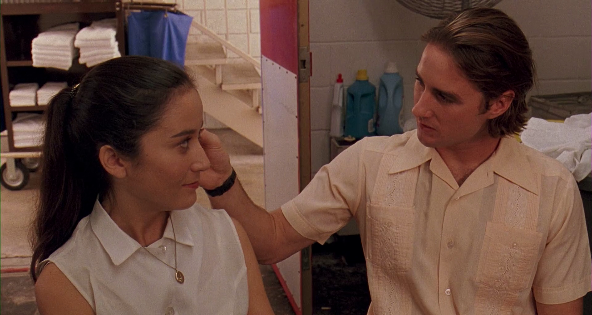
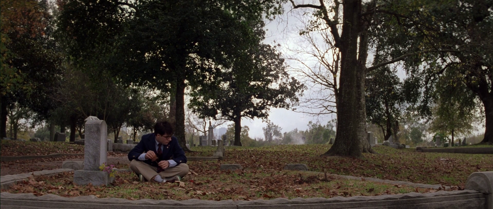
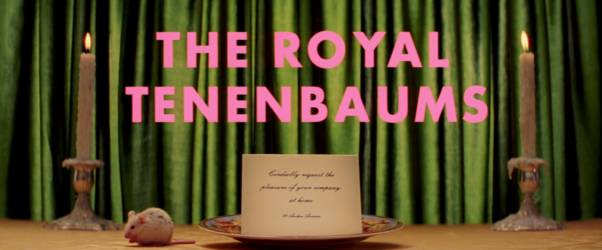

Filmografia do Wes Anderson
Quero assitir a filmografia inteira do Wes Anderson em ordem de lançamento incluindo curtas(já deu ruim porque não assisti o curta de Bottle Rocket de 93) e vou deixar minhas considerações aqui.
Bottle Rocket (1996)

Em primeiríssimo lugar, o personagem Dignam (Owen Wilson) nas primeiras cenas do filme me lembra MUITO o Kendall Roy (Jeremy Strong) em Sucession, um cara patético que tenta controlar os outros para esconder sua insegurança por ser um ninguém e que se acovarda no primeiro sinal de autoridade. Mais do que isso, os trejeitos do Dignam que se expressam ao falar, gaguejar por falar rápido demais e se repetir umas três vezes seguidas para parecer alguém digno de respeito, são IDÊNTICOS aos do Kendall e eu tenho certeza que o Jeremy se inspirou nesse personagem para representar seu papel.
Em segundo lugar, SIM É O OWEN WILSON! Não sei como eu não percebi durante o filme (sei sim, ele tá com cabelo curto e espetado), apesar de ficar tentando reconhecer de onde eu conhecia o ator o tempo todo. Acabei descobrindo só quando abri a Wikipedia para ver os nomes dos atores. Surpreendente.
Rushmore (1998)

Garotinho arrombado. História bonitinha sobre descobrir quem você é no meio da adolescência, tocando claramente na passagem experienciada pelas Pessoas Estranhas - que você, caro leitor, com certeza foi (nenhum dos normies que eu conheço leriam meu blog.) - com seu grupo pequeno de amigos também estranhos, embora raramente envolva um magnata na vida real. Apesar dos eventos mostrados na trama serem exagerados, os sentimentos evocados por eles são verossímeis e tratados com delicadeza, comovendo o público não só por se tratar de temas universais à condição humana - amor, amizade e os conflitos decorrentes dessas -, mas também pela ótima atuação do trio principal de Jason Scharwtzman, que interpreta o protagonista Max Fischer, Bill Murray, representando o empresário Herman Blume, que se admira pela estranheza genuína de Max, e Olivia Williams, que dá a vida à Rosemary Cross, professora na escola epônima (usei certo?) e se torna interesse romântico de Max e subsequentemente de Herman. Dito isso, assédio sexual e perseguição são crimes e o Max devia ter sido preso (ele foi, mas por outro motivo). Avaliação: 4/5
The Royal Tenenbaums (2001)

A primeira coisa que você nota assistindo o filme é que ele é lindo. É nesse filme que a estética associada ao Anderson - cores mornas e vibrantes, com cores contrastantes aparecendo com a frequência certa para tornar esses momentos ainda mais impactantes, e as texturas dos objetos sempre saltando aos olhos, principalmente quando se trata do veludo dos tecidos - realmente se consolida. Outro aspecto notável é a quantidade imensa de atores famosíssimos trabalhando no filme, que dão a impressão que o Wes finalmente se concretizou como um grande diretor. O filme é sobre família, em específico, sobre a redenção de pai ausente que quer voltar a fazer parte da família, não porque ele realmente gosta dos filhos, mas porque a esposa está considerando se casar com outro homem. Pausa.
Intermissão: Caro leitor, apesar de estar escrevendo agora, no dia 3, na verdade assisti esse filme ontem e infelizmente não tive tempo para redigir até agora devido a algumas interrupções (demorei 3 horas para assistir um filme de 1h50min). Em algum momento do filme, imagino que haviam passado 30 minutos, minha mãe chegou mais cedo do trabalho, então eu pausei o filme e fui fazer a janta - panaché de legumes - que apesar de ser apenas abóbora, abobrinha e pimentão (nenhum dos quais é um legume) com alho, sal e pimenta ainda deu um baile nos do bandejão. Com os vegetais no forno, me direcionei à sala, buscando dar continuidade ao filme, quando meu pai chegou. Evento devastador, pois eu sabia que nunca iria conseguir terminar o filme sem mais intermissões. Ele felizmente decidiu dar uma caminhada, mas eu já sabia o que esperar então me preveni e tentei aproveitar o máximo possível, então fiz uma tábua de queijo (no singular mesmo), onde usei um gorgonzola que estava doida para abrir, bolacha de água e sal, mel e na falta de nozes e da amêndoa defumada do empório perto de casa, adicionei o que tinha: amendoim e semente de abóbora, ambos sem sal. E fui ao sofá, com as legendas ligadas agora, assistir ao resto do filme.
Despausa. Voltando ao filme, pelo menos por uns quinze minutos, acho muito interessante como em histórias fictícias de redenção os familiares/ amigos que são contra a redenção são retratados como rancorosos e sem amor no coração, quando no mundo real esse modo de agir é o mais sensato na maioria das vezes. Perdão é algo realmente complicado. O Royal (Gene Hackman) nunca fez uma ação extremamente ofensiva à sua família - com exceção ao que ele tenha feito que causou sua esposa a expulsá-lo de casa -, mas tomou diversas ações bem ofensivas e é completamente natural que sua família não seja a favor de que ele volte a ser presente em suas vidas, embora seja crível que ele realmente mudou e tem interesse em ser uma pessoa melhor para sua família. Dito isso, ele mesmo não percebe como se sente até ser tarde demais, em uma cena muito bonita onde, numa tentativa de não ser expulso novamente de casa, proclama "Look, I know I'm gonna be the bad guy in this one. But I just want to say the last six days have been the best six days of probably my whole life." e o narrador (Alec Baldwin) completa com "Immediately after making this statement Royal realized that it was true". A partir desse momento, ele se esforça para melhorar como pessoa e o espectador, que está com um (ou vários) pé atrás começa a torcer para que a mudança seja verdadeira. Pausa.
Intermissão: Muito engraçado né, parar nesses momentos onde você quer saber mais do que se passa na cabeça dessas pessoas que você acompanhou por tempo indeterminado. Enfim, meu pai voltou da caminhada e foi fazer uma tortilha espanhola para minha mãe e eu desisti de assistir o filme (não tem porta entre a cozinha e a sala). Enquanto eu espero os vinte e tanto minutos que ele demorou para cozinhar passarem, vou falar sobre a tábua de queijo. O amendoim e a semente de abóbora não atrapalharam, mas também não ajudaram, foi como comer queijo e amendoim. Por outro lado, o mel, meu deus, o mel. Muito mais do que a soma das partes, sentir o gosto forte do queijo e o doce floral do mel ao mesmo tempo é muito difícil de descrever de tão complexo. O gorgonzola era da marca Cruzília (alguma coisa assim) e apesar do gosto ser bom, gostaria que fosse um pouco mais intenso. Não sei se devia ter colocado minhas divagações do parágrafo anterior nesse daqui, mas sinto que, como elas apareceram lá no fluxo de consciência, lá devem permanecer. Meu pai sai da cozinha e eu ligo o computador de novo.
Despausa. O enredo secundário, do incesto, foi tão interessante quanto o principal, talvez porque os personagens secundários daquele não são apenas obstáculos como os deste. Por exemplo, Chas (Ben Stiller), que está traumatizado pela morte da sua esposa no ano anterior e se tornou superprotetor de seus filhos, age apenas como um antagonista ao retorno de seu pai, com sua aprovação finalmente marcando o fim da jornada de redenção. Enquanto isso, o enredo do incesto envolve três personagens muito complexos e um não tão interessante assim, o personagem do Bill Murray, esposo da Margot (Gwyneth Paltrow), que parece o pai dela, então é interessante de um outro jeito. Não tenho muito a comentar, principalmente porque o artigo já está muito longo e eu estou cansada. Espero que vocês entendam o porquê desse em específico ter sido longo e cheio de pausas, representando a minha própria experiência com o filme e sendo o motivo de eu não me achar apta a realmente avaliá-lo agora. Preciso assistir uma outra vez sem ser irritada por forças externas. Tem um pássaro chamado Mordecai. Avaliação: ?/5.